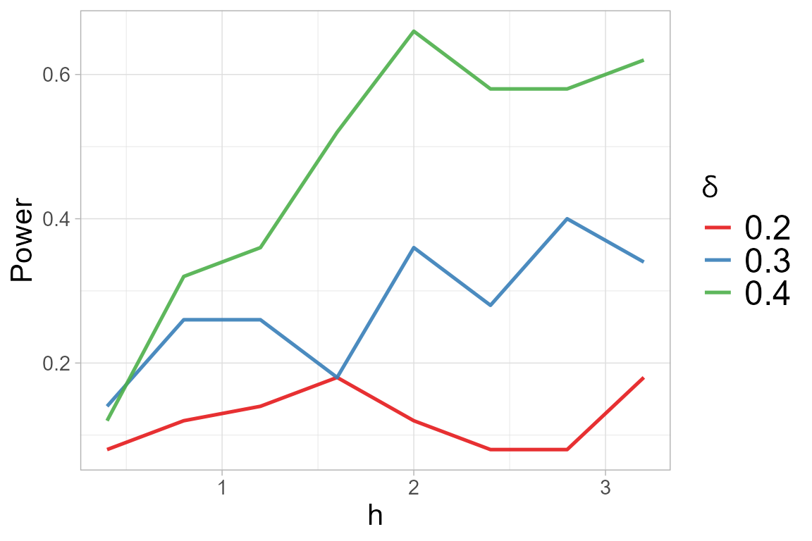

Consider \(k\) random samples of i.i.d. observations \(\mathbf{x}^{(i)}_1, \mathbf{x}^{(i)}_{2}, \ldots, \mathbf{x}^{(i)}_{n_i} \sim F_i\), for \(i = 1, \ldots, k\).
We test if the samples are generated from the same unknown distribution \(\bar{F}\), that is: \[ H_0: F_1 = F_2 = \ldots = F_k = \bar{F} \] versus the alternative where two of the \(k\) distributions differ, that is \[ H_1: F_i \not = F_j, \] for some \(1 \le i \not = j \le k\).
Upon the construction of a matrix distance \(\hat{\mathbf{D}}\), with off-diagonal elements \[ \hat{D}_{ij} = \frac{1}{n_i n_j} \sum_{\ell=1}^{n_i}\sum_{r=1}^{n_j}K_{\bar{F}}(\mathbf{x}^{(i)}_\ell,\mathbf{x}^{(j)}_r), \qquad \mbox{ for }i \not= j \] and in the diagonal \[ \hat{D}_{ii} = \frac{1}{n_i (n_i -1)} \sum_{\ell=1}^{n_i}\sum_{r\not= \ell}^{n_i}K_{\bar{F}}(\mathbf{x}^{(i)}_\ell,\mathbf{x}^{(i)}_r), \qquad \mbox{ for }i = j, \] where \(K_{\bar{F}}\) denotes the Normal kernel \(K\), defined as
\[ K(\mathbf{s}, \mathbf{t}) = (2 \pi)^{-d/2} \left(\det{\mathbf{\Sigma}_h}\right)^{-\frac{1}{2}} \exp\left\{-\frac{1}{2}(\mathbf{s} - \mathbf{t})^\top \mathbf{\Sigma}_h^{-1}(\mathbf{s} - \mathbf{t})\right\}, \]
for every \(\mathbf{s}, \mathbf{t} \in
\mathbb{R}^d \times \mathbb{R}^d\), with covariance matrix \(\mathbf{\Sigma}_h = h^2 I\) and tuning
parameter \(h\), centered with respect
to \[
\bar{F} = \frac{n_1 \hat{F}_1 + \ldots + n_k \hat{F}_k}{n}, \quad \mbox{
with } n=\sum_{i=1}^k n_i.
\] For more information about the centering of the kernel, see
the documentation of the kb.test() function.
help(kb.test) We compute the trace statistic \[ \mathrm{trace}(\hat{\mathbf{D}}_n) = \sum_{i=1}^{k}\hat{D}_{ii}. \] and \(D_n\), derived considering all the possible pairwise comparisons in the \(k\)-sample null hypothesis, given as \[ D_{n} = (k-1) \mathrm{trace}(\hat{\mathbf{D}}_n) - 2 \sum_{i=1}^{k}\sum_{j> i}^{k}\hat{D}_{ij}. \]
We show the usage of the kb.test() function with the
following example of \(k=3\) samples of
bivariate observations following normal distributions with different
mean vectors.
We generate three samples, with \(n=50\) observations each, from a
2-dimensional Gaussian distributions with mean vectors \(\mu_1 = (0, \frac{\sqrt{3}}{3})\), \({\mu}_2 = (-\frac{1}{2},
-\frac{\sqrt{3}}{6})\) and \(\mu_3 =
(\frac{1}{2}, -\frac{\sqrt{3}}{6})\), and the Identity matrix as
covariance matrix. In this situation, the generated samples are well
separated, following different Gaussian distributions, i.e. \(X_1 \sim N_2(\mu_1, I)\), \(X_2 \sim N_2(\mu_2, I)\) and \(X_3 \sim N_2(\mu_3, I)\)}. In order to
perform the \(k\)-sample tests, we need
to define the vector y which indicates the membership to
groups.
library(mvtnorm)
library(QuadratiK)
library(ggplot2)
sizes <- rep(50,3)
eps <- 1
set.seed(2468)
x1 <- rmvnorm(sizes[1], mean = c(0,sqrt(3)*eps/3))
x2 <- rmvnorm(sizes[2], mean = c(-eps/2,-sqrt(3)*eps/6))
x3 <- rmvnorm(sizes[3], mean = c(eps/2,-sqrt(3)*eps/6))
x <- rbind(x1, x2, x3)
y <- as.factor(rep(c(1,2,3), times=sizes))
ggplot(data.frame(x=x, y=y), aes(x = x[,1], y = x[,2], color = y)) +
geom_point(size = 2) +
labs(title = "Generated Points", x = "X1", y = "X2") +
theme_minimal()
To use the kb.test() function, we need to provide the
value for the tuning parameter \(h\).
The function select_h can be used for identifying on
optimal value of \(h\). This
function needs the input x and y as the
function kb.test, and the selection of the family of
alternatives. Here we consider the location alternatives.

h_k$h_sel## [1] 1.6The select_h function has also generated a figure
displaying the obtained power versus the considered \(h\), for each value of alternative \(\delta\) considered.
We can now perform the \(k\)-sample tests with the optimal value of \(h\).
##
## Kernel-based quadratic distance k-sample test
## U-statistic Dn Trace
## ------------------------------------------------
## Test Statistic: 4.238404 6.834896
## Critical Value: 1.113956 1.797719
## H0 is rejected: TRUE TRUE
## CV method: subsampling
## Selected tuning parameter h: 1.6The function kb.test() returns an object of class
kb.test. The show method for the
kb.test object shows the computed statistics with
corresponding critical values, and the logical indicating if the null
hypothesis is rejected. The test correctly rejects the null hypothesis,
in fact the values of the statistics are greater than the computed
critical values. The package provides also the summary
function which returns the results of the tests together with the
standard descriptive statistics for each variable computed, overall, and
with respect to the provided groups.
summary_ktest <- summary(k_test)##
## Kernel-based quadratic distance k-sample test
## Statistic Value Critical_Value Reject_H0
## 1 Dn 4.238404 1.113956 TRUE
## 2 Trace 6.834896 1.797719 TRUE
summary_ktest$summary_tables## [[1]]
## Group 1 Group 2 Group 3 Overall
## mean -0.05208816 -0.3961768 0.5318161 0.027850399
## sd 0.96223294 0.8169982 1.1147943 1.039422979
## median -0.07433374 -0.4171737 0.4466713 0.003313025
## IQR 1.34379740 1.1499518 1.4976634 1.507024820
## min -2.86000669 -2.1929616 -2.1754778 -2.860006689
## max 1.88750642 1.0851059 2.6517848 2.651784802
##
## [[2]]
## Group 1 Group 2 Group 3 Overall
## mean 0.3928294 -0.2851004 -0.4028292 -0.09836674
## sd 0.9612003 1.1243216 0.9603282 1.07079458
## median 0.2303015 -0.1667130 -0.3676814 -0.14246592
## IQR 1.1269249 1.2443774 1.3256384 1.24637078
## min -1.1662595 -3.5108957 -2.6488286 -3.51089574
## max 3.0792766 2.1192756 1.5225887 3.07927659Note
If a value of \(h\) is not provided
to kb.test(), this function performs the function
select_h for automatic search of an optimal value
of \(h\) to use. . The following code
shows its usage, but it is not executed since we would obtain the same
results.
k_test_h <- kb.test(x=x, y=y)For more details visit the help documentation of the
select_h() function.
help(select_h) In the kb.test() function, the critical value can be
computed with the subsampling, bootstrap or permutation algorithm. The
default method is set to subsampling since it needs less computational
time. For details on the sampling algorithm see the documentation of the
kb.test() function and the following reference.
The proposed tests exhibit high power against asymmetric alternatives that are close to the null hypothesis and with small sample size, as well as in the \(k \ge 3\) sample comparison, for dimension \(d>2\) and all sample sizes. For more details, see the extensive simulation study reported in the following reference.
References
Markatou, M. and Saraceno, G. (2024). “A Unified Framework for
Multivariate Two- and k-Sample Kernel-based Quadratic Distance
Goodness-of-Fit Tests.”
https://doi.org/10.48550/arXiv.2407.16374